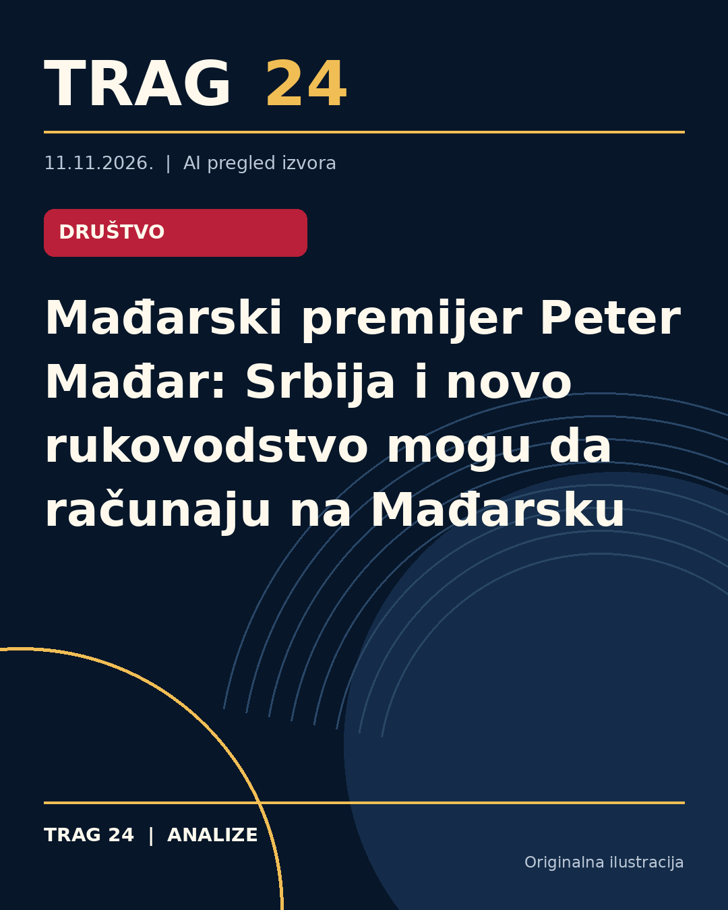

Mađarski premijer Peter Mađar: Srbija i novo rukovodstvo mogu da računaju na Mađarsku

ŠTA SE DOGODILO
Premijer Mađarske, Peter Mađar, izjavio je da Srbija i njeno novo rukovodstvo mogu da računaju na podršku Mađarske. On je izrazio želju da među prvima poseti novo rukovodstvo Srbije ili da ga ugosti u Budimpešti. Izjave je dao tokom konferencije za novinare održane u Berlinu.
HRONOLOGIJA
Nakon izbora u Srbiji 25. oktobra, kada je Studentska lista ostvarila značajnu pobedu, mađarski premijer je brzo stupio u kontakt sa predstavnicima nove vlade i čestitao im na uspehu. Pre toga, tokom svoje parlamentarne govora, najavio je uspostavljanje saradnje sa novim rukovodstvom Srbije, što je izazvalo pozitivan odziv u mađarskom parlamentu.
ŠTA NAVODE IZVORI
Svi izvori slažu se da je Peter Mađar istakao spremnost da pruži podršku Srbiji u procesu evropskih integracija, pristupanju Evropskoj uniji i drugim pitanjima. Potvrđuju njegovu izjavu da bi voleo da bude među prvima koji će posetiti novo srpsko rukovodstvo ili da ih ugosti u Mađarskoj. Takođe, podsećaju na njegovu brzu čestitku predstavnicima Studentske liste nakon izborne noći.
ŠTA JE POTVRĐENO
Potvrđeno je da je Peter Mađar na konferenciji u Berlinu jasno izrazio podršku Srbiji i njenom novom rukovodstvu. Takođe, potvrđeno je da je bio prvi međunarodni lider koji je pozvao i čestitao na izbornoj pobedi Studentskoj listi. Nema razlika u prikazanim informacijama između izvora.
ŠTA NIJE POTVRĐENO
Nisu dostupne informacije o konkretnim koracima podrške koju će Mađarska pružiti, niti o tačnim datumima i planovima poseta ili sastanaka, osim opšteg izraza želje premijera Mađara za uspostavljanje kontakta.
ŠTA OSTАJE OTVORENO: Ostaje nepoznato kada će tačno doći do prve zvanične posete ili susreta između mađarskog premijera i novoizabranih srpskih predstavnika. Takođe, nije precizirano koje konkretne oblasti saradnje će prioritetno biti razvijene u budućnosti.
Izvori
- https://www.danas.rs/svet/madjar-srbija-i-njeno-novo-rukovodstvo-mogu-da-racunaju-na-madjarsku/
- https://n1info.rs/vesti/madjar-srbija-i-njeno-novo-rukovodstvo-mogu-da-racunaju-na-madjarsku/
- https://nova.rs/vesti/svet/novo-rukovodstvo-srbije-moze-da-racuna-na-madjarsku/
Ova analiza je pripremljena uz pomoć veštačke inteligencije na osnovu javno dostupnih izvora. Navodi izvora nisu nužno nezavisno potvrđeni.